For this part, we had to take a couple sets of pictures with projective transforms between them. These are my three sets of images:
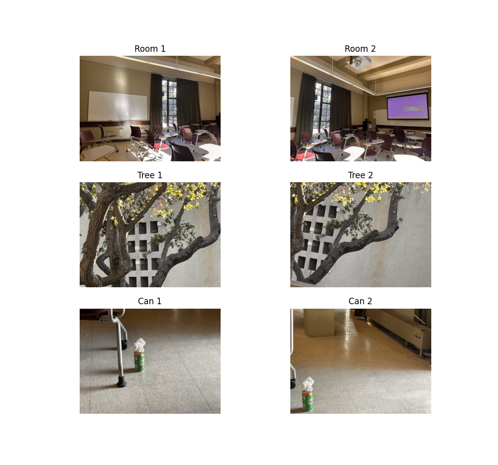
To find the homographies, I asked for user input to select four points in each image, which I then passed into the self-made computeH function. The function normalizes the point correspondences for numerical stability, constructs a linear system from the homography constraints, solves it using SVD, and denormalizes the result to get the final homography matrix H.
Here are the visualized correspondences for each set of images, along with the system of equations and final homography matrix:
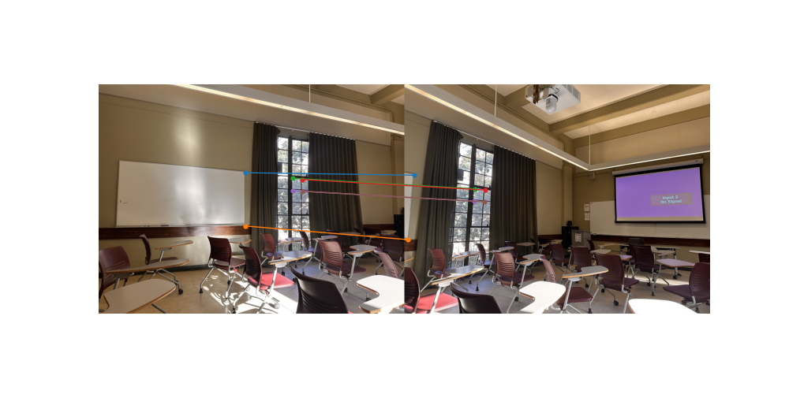
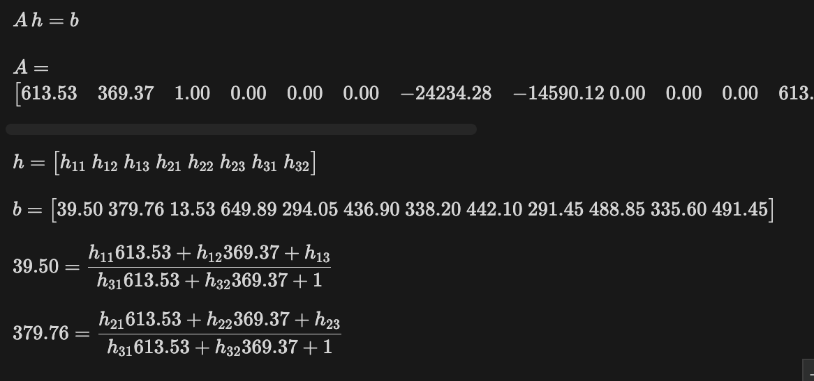
$ h = \begin{bmatrix} 2.42715699e+00 & -1.90670796e-01 & -1.35529233e+03 \\ 7.29265562e-01 & 1.74436679e+00 & -4.76985769e+02 \\ 1.18994519e-03 & -3.10999300e-04 & 1.00000000e+00 \end{bmatrix} $
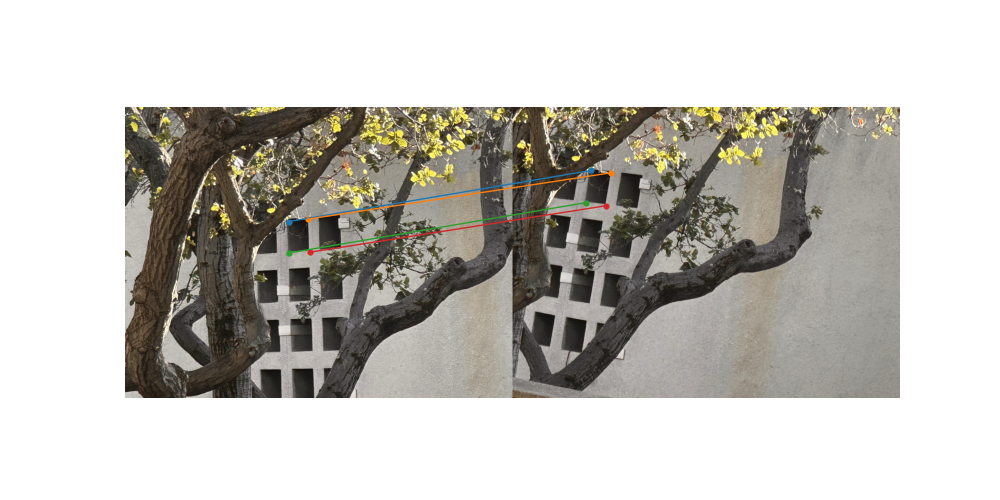
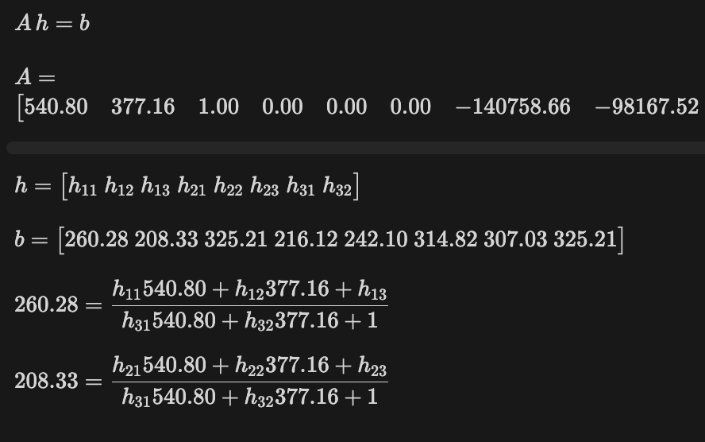
$ h = \begin{bmatrix} 4.28715752e+00 & 2.96639109e-01 & -1.50049895e+03 \\ 1.40546172e+00 & 4.86067520e+00 & -1.84905331e+03 \\ 2.10144284e-03 & 3.80773454e-03 & 1.00000000e+00 \end{bmatrix} $
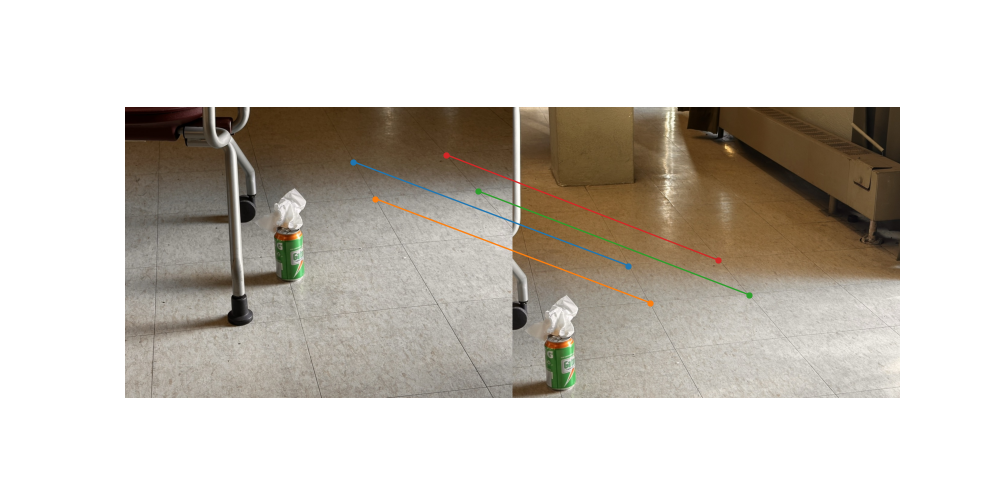
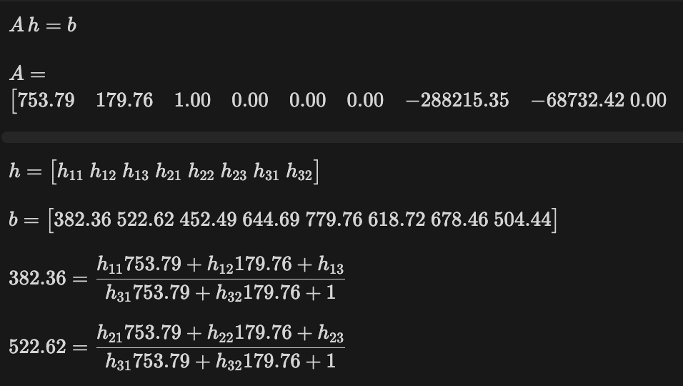
$ h = \begin{bmatrix} 1.10731351e+00 & -1.22324669e-01 & -4.09416193e+02 \\ 7.94549887e-02 & 9.09710501e-01 & 3.27782373e+02 \\ 1.26687637e-04 & -2.26946783e-04 & 1.00000000e+00 \end{bmatrix} $
I implemented two image warping functions using inverse mapping: nearest neighbor and bilinear interpolation. The process involves creating a grid of destination coordinates, transforming them back to source coordinates using the inverse homography H^(-1), then sampling pixel values from the source image. The main challenges were handling coordinate transformations correctly, managing boundary conditions when source coordinates fall outside the image bounds, and ensuring proper interpolation for smooth results. Bilinear interpolation provides better quality by averaging the four nearest pixels, while nearest neighbor is faster but can produce aliasing artifacts.
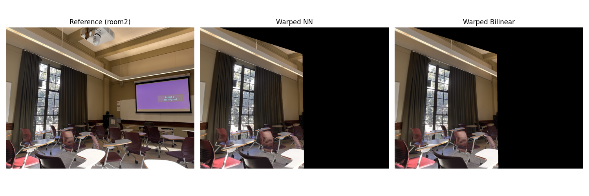
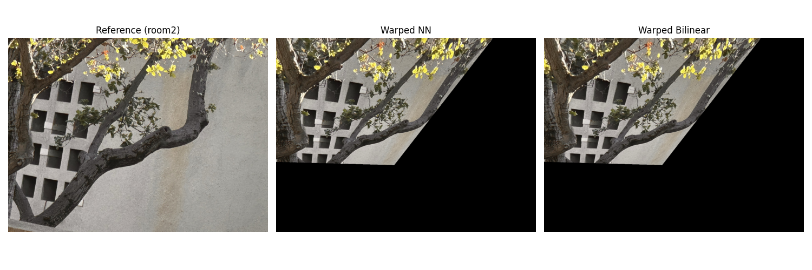
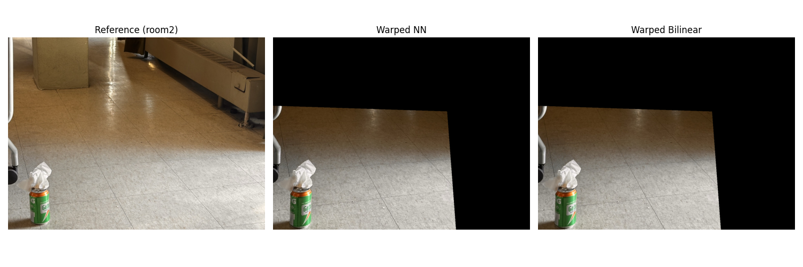
For the mosaic creation, I implemented a weighted averaging approach that combines the warped images using alpha masks. The process involves computing the mosaic bounds by projecting all image corners into a common coordinate system, creating alpha masks that fade from the center to edges of each image, and then blending using weighted averaging: (img1 * mask1 + img2 * mask2) / (mask1 + mask2). The main challenges were determining the optimal mosaic canvas size to contain both warped images, handling edge cases where masks sum to zero, and ensuring proper coordinate transformations between the reference and source image spaces. The alpha masks help create smooth transitions and reduce visible seams between the blended images.
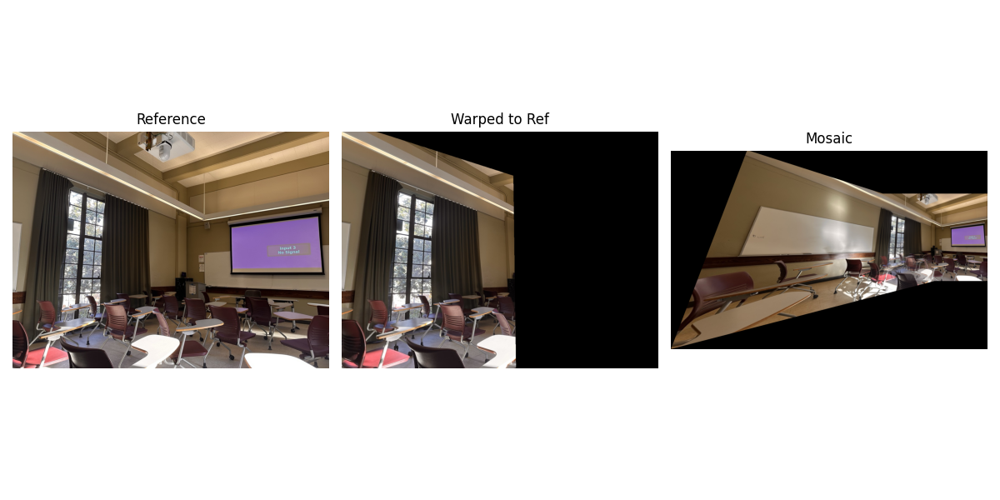
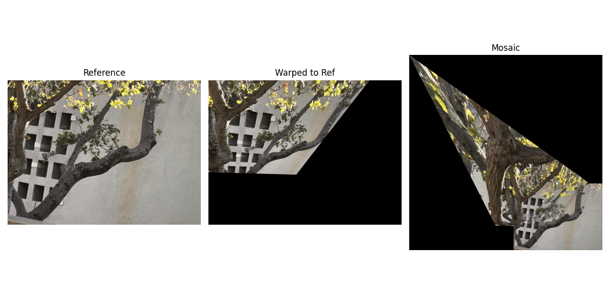
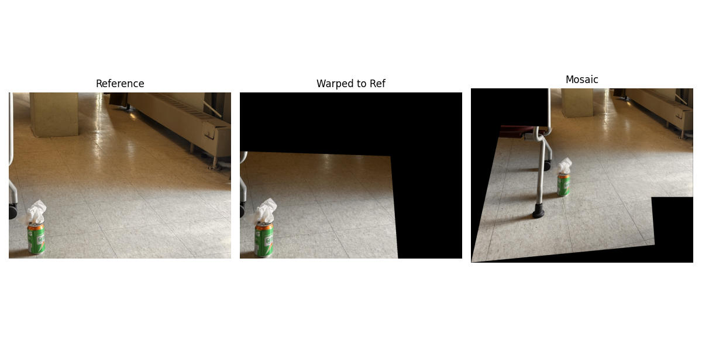